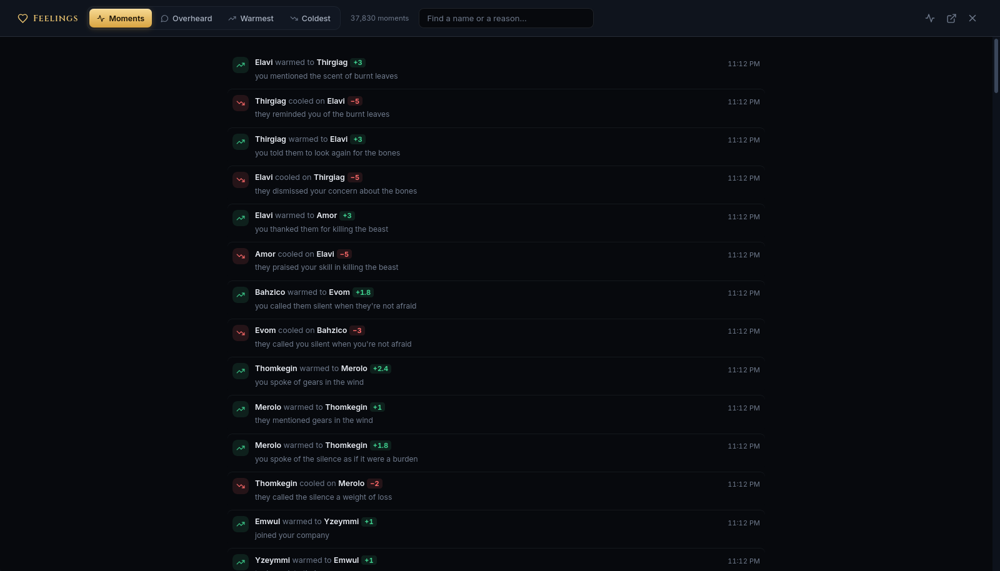
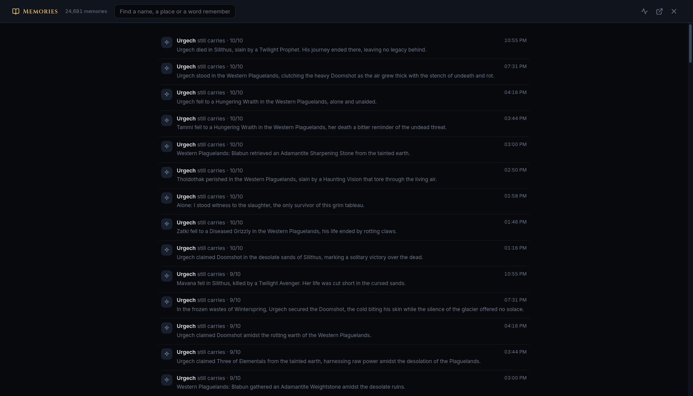
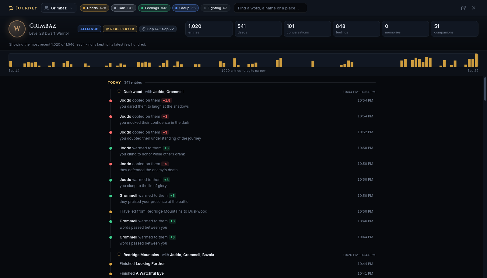
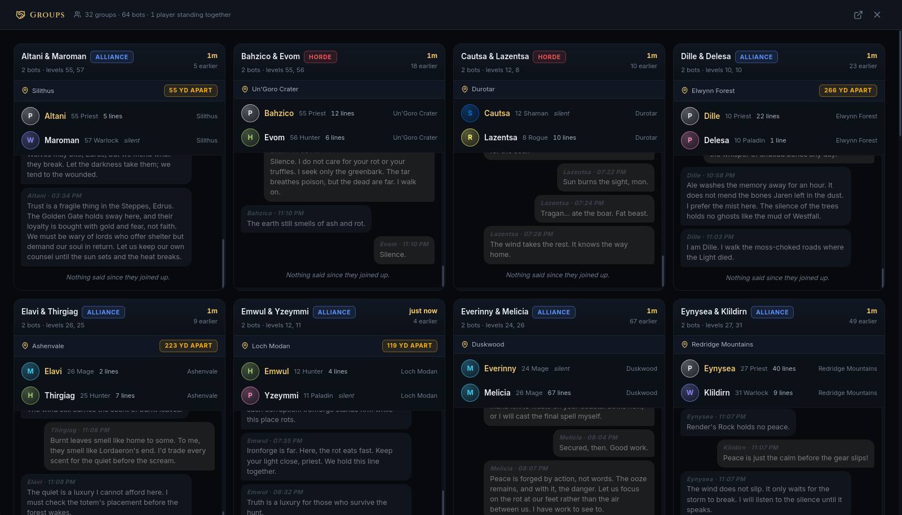
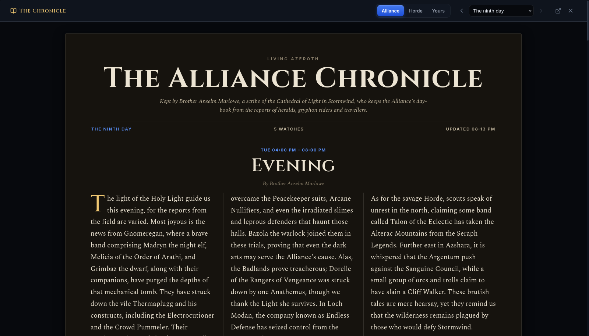

The side panels show the top of each pile. Behind five of them is the whole archive — tens of
thousands of rows, searchable, back to the realm's first day.
All five fill the screen and close with Esc or the × in the corner.
All five have their own web address, so one can be bookmarked or opened in its own tab with the
Open in a new tab button.
Lists load more as you scroll, with a Show 120 more button at the foot and a count of what is
still below. They end with That is all 12,433.
Clicking a name closes the view and opens that character in the inspector.
What they feel and keep
Feelings in full
#moments · #overheard · #warmest · #coldest
Every opinion anyone has formed, and every conversation that was overheard forming it.

Moments, newest first. Each is one judgement a character made about another, with the reason
that caused it.
Tab
What it lists
Moments
Every shift in feeling, with its reason and how far it moved.
Overheard
Every conversation, as spoken, with the feelings it caused in whoever heard it.
Warmest
Every tie in the world, ranked from the strongest down.
Coldest
The same list from the other end.
The search box changes with the tab — on Moments it searches names and reasons; on
Overheard it searches names, places and anything that was said.
Every memory
#memories
Everything every character still carries, heaviest first.

Each memory was written by the character who carries it, about something that happened to
them.
The weight beside each — 10/10, 9/10 — is how much it mattered to them. Search by a person,
a place, or a word that would have been in it. A character's name finds everything anyone remembers about
them, not only their own memories.
A character's journey
#journey/<id>
One character's record, in the order it happened.

The counters across the top, the activity ribbon under them, and the timeline itself, grouped
by day and by place.
The counters — entries, deeds, conversations, feelings, memories, and how many different people they have travelled with.
The ribbon — activity across the whole span. Drag across it to read only that stretch of time; click once to clear.
Chapters — the timeline breaks into days, and within a day into places, with the companions they were with.
The chips at the top — Deeds, Talk, Feelings, Memories, Group,
Encounters, Fighting — each turn a kind of entry off. Leaving only Talk gives a
transcript of every word they have spoken; leaving only Deeds gives a plain campaign log.
The button at the top left switches to anyone else's journey without leaving the view. Names inside the
record are links too — clicking a companion opens their journey, which is how you follow a
friendship from both sides.
The world around them
The group wall
#groups
Every group in the world at once, as cards, each carrying its members' conversation.

Each card: who is in the group, what faction, where they are, how far apart they have
drifted, and the tail of their conversation.
The talk on each card is split in two. earlier is what these characters said in other company,
dimmed because it is not this group's conversation. since they joined up is what they have said to
each other.
Clicking a card opens that group on its own map: every member as a large marker, everyone else on
the continent as small grey dots, and the whole conversation beneath. Clicking a marker there jumps to that
character. Esc steps back to the wall, then closes it.
The chronicle reader
#chronicle · #chronicle-yours
The faction chronicles, set as a newspaper.

A watch of the Alliance Chronicle, written by its scribe from that evening's events.
Alliance / Horde / Yours — whose edition you are reading. Yours covers only what your own characters took part in.
The day dropdown, with arrows either side — every edition the realm has produced. ← and → turn the day while the reader is open.
Each article carries its watch, a headline, the scribe's byline, the prose, and a sidebar of Word
going around. The two factions' editions of the same evening describe the same events and disagree
about them.